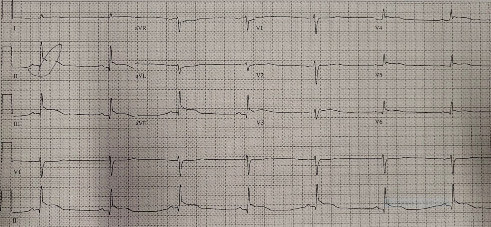
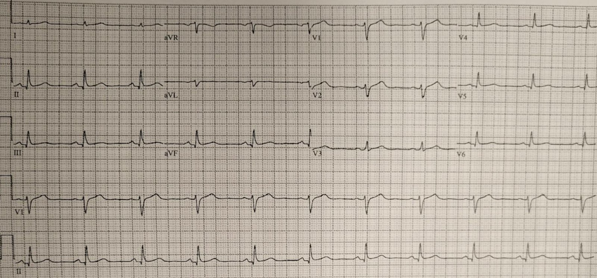
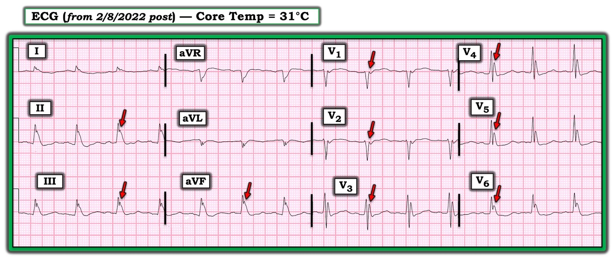
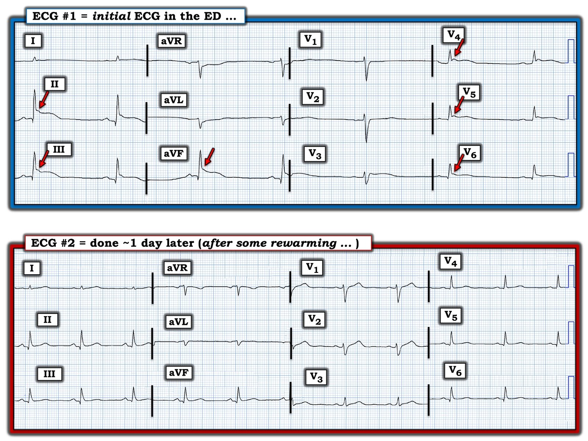

21/01/2023 — Bất tỉnh + đạt tiêu chuẩn STEMI: có kích hoạt phòng thông tim không?
Bản dịch tiếng Việt của bài "Unconscious + STEMI criteria: activate the cath lab?" – Dr. Smith’s ECG Blog. Giữ nguyên toàn bộ 5 hình ảnh của bản gốc.
Ca bệnh do BS. Mazen El-Baba và BS. Evelyn Dell gửi và viết, Jesse McLaren biên tập
Đội cấp cứu ngoài viện (EMS) đưa đến một bệnh nhân nam không rõ danh tính, ở độ tuổi 30, được phát hiện trong một khu rừng đô thị gần một khu lều trại của người vô gia cư vào một ngày thu se lạnh. Không có dấu hiệu chấn thương tại hiện trường cũng như trên người bệnh nhân. EMS báo cáo điểm GCS ban đầu là 8, hai đồng tử đều và còn phản xạ ánh sáng. Bệnh nhân có một cơn co giật co cứng–co giật toàn thể có người chứng kiến, sau đó GCS còn 4. Dấu hiệu sinh tồn: tần số tim 45; huyết áp tâm thu 110-120; nhịp thở không đều; độ bão hòa oxy bình thường; nhiệt độ đo ở màng nhĩ 30; glucose 6. Tại phòng hồi sức, bệnh nhân lên thêm một cơn co giật, cắt cơn sau khi tiêm tĩnh mạch Lorazepam. Điện tâm đồ đạt tiêu chuẩn STEMI và được kết quả đọc bằng máy tính ghi là STEMI. Bạn diễn giải điện tâm đồ này thế nào, và bạn có kích hoạt phòng thông tim (cath lab) không?


Bạn nghĩ sao?
Điện tâm đồ này cho thấy nhịp chậm xoang với dẫn truyền bình thường (PR bình thường, QRS bình thường và QTc bình thường), trục bình thường, tăng tiến sóng R bình thường, điện thế bình thường. Có ST chênh lên ở vùng dưới-bên, kèm ST chênh xuống soi gương ở aVL. Nhưng ST chênh lên có hình thái không điển hình, theo sau gần như không có sóng T, và đứng trước là các sóng J.
Sóng J (sóng lệch nhỏ tại chỗ nối R-ST) trên điện tâm đồ nền thường đi kèm ST chênh lên biến thể bình thường. Dù theo truyền thống được mô tả là “tái cực sớm lành tính”, chúng đã được ghi nhận có liên quan với các hội chứng sóng J cùng với hội chứng Brugada, gây loạn nhịp thất (1, 2). Sóng J cấp tính và có thể hồi phục được gọi là “sóng Osborn” và thường đi kèm hạ thân nhiệt, tình trạng cũng có thể gây loạn nhịp thất (3), trong đó kích thước sóng tương quan với nhiệt độ càng lạnh và sóng biến mất khi làm ấm (5). Sóng J cũng có thể do nhồi máu cơ tim do tắc (Occlusion MI) gây ra (5), do các tình trạng giả STEMI bao gồm Takotsubo và viêm cơ tim có biến chứng loạn nhịp thất (6, 7), và do xuất huyết dưới nhện kèm rung thất (VF) (8).
Các câu hỏi lâm sàng:
- Đây có phải nhồi máu cơ tim do tắc không và bệnh nhân có cần vào phòng thông tim không?
Dù đạt tiêu chuẩn STEMI, hình thái này không điển hình cho OMI và do đó có thể là STEMI dương tính giả, nhất là với bệnh cảnh mất ý thức, co giật và một nhịp có tưới máu.
- Đây có phải Takotsubo không?
Bệnh này có thể tạo ra ST chênh lên kỳ dị giả STEMI, và có thể do các thảm họa nội sọ gây ra, phù hợp với bệnh cảnh này.
- Còn nguyên nhân nào khác có thể tạo ra hình ảnh điện tâm đồ và bệnh cảnh lâm sàng này không?
Hạ thân nhiệt cũng có thể gây nhịp chậm và sóng J, với hình ảnh giả STEMI. Một nhiệt kế thực quản được đặt và cho kết quả 28 độ C (82.4F)!
Vì vậy, thay vì kích hoạt phòng thông tim, bệnh nhân được chụp CT sọ não khẩn và được làm ấm lại.
Các dấu hiệu điện tâm đồ dự kiến gặp trong hạ thân nhiệt bao gồm: mẹo ghi nhớ SLOWED:
- Shivering artifacts (nhiễu do run)
- Low voltages (điện thế thấp)
- Osborn waves (sóng Osborn): sóng lệch dương tại điểm J ở các chuyển đạo trước tim và chuyển đạo chi, và thường có sóng lệch âm soi gương ở aVR và V1. Sóng Osborn là dấu hiệu điện tâm đồ đặc hiệu nhất của hạ thân nhiệt và biên độ sóng J tương quan trực tiếp với mức độ hạ thân nhiệt (4)
- Wide intervals (các khoảng giãn rộng: PR, QRS, QT, RR)
- Bao gồm các rối loạn nhịp chậm
- Nhịp chậm xoang
- Rung nhĩ đáp ứng thất chậm
- Nhịp bộ nối chậm
- Blốc nhĩ thất
- Ectopy (ngoại tâm thu)
- Ngoại tâm thu thất
- Dead (tử vong – ngừng tim do VT, VF hoặc vô tâm thu)
Ca bệnh tiếp diễn:
Xét nghiệm máu ban đầu cho thấy: toan hô hấp nhẹ (trước đặt nội khí quản) trên khí máu tĩnh mạch (VBG) với lactat 3 và pCO2 68, troponin âm tính (4 ng/L). Điện giải đồ và bảng điện giải mở rộng bình thường. CT sọ não cho thấy xuất huyết dưới nhện (SAH) do chấn thương và tụ máu dưới màng cứng (SDH) nhỏ, kèm vỡ xương chẩm do chấn thương. Bảng xét nghiệm chuyển hóa bao gồm cortisol và TSH vẫn đang chờ kết quả.
Tiếp tục làm ấm chủ động: bệnh nhân được truyền 2L nước muối sinh lý đã làm ấm và được đắp chăn khí ấm (bear hugger). Nhiệt độ trung tâm của bệnh nhân rất khó thay đổi, khiến chúng tôi càng nghi ngờ nguyên nhân hạ thân nhiệt không phải do môi trường, mà do nguyên nhân chuyển hóa hoặc trung ương. TSH trả về là 45. T3 gần như không phát hiện được. Đã mời hội chẩn khẩn (STAT) nội tiết, và đã cho truyền T3/T4 cùng synthroid tĩnh mạch.
Khoảng 24 giờ sau, bệnh nhân bắt đầu ấm lại và nhiệt độ trung tâm là 34.7C (94.5F). Một điện tâm đồ khác được ghi, cho thấy như sau:


Nhịp xoang bình thường, tần số bình thường, dẫn truyền điện bình thường (PR, QRS, QTc), trục bình thường, điện thế thấp ở mức ranh giới, ST/T đã trở về bình thường và sóng J biến mất.
Điều cần nhớ:
- Không phải mọi ST chênh lên (STE) đều là STEMI hay OMI. Luôn có chẩn đoán phân biệt rộng và cách tiếp cận ST chênh lên trên điện tâm đồ, áp dụng trong bối cảnh lâm sàng.
- Sóng J có thể gặp trong ST chênh lên biến thể bình thường nhưng cũng gặp trong nhồi máu cơ tim do tắc (xemcác ca này về sóng J có và không có OMI) và các tình trạng giả OMI bao gồm Takotsubo và viêm cơ tim.
- Khi gặp bệnh nhân hạ thân nhiệt, hãy nghĩ tới mẹo ghi nhớ SLOWED để lường trước các thay đổi điện tâm đồ.
- Sóng J trong hạ thân nhiệt (kể cả do phù niêm) tỷ lệ nghịch với nhiệt độ, cải thiện khi làm ấm, và có thể đi kèm các thay đổi khác của hạ thân nhiệt – hãy nghĩ tới mẹo ghi nhớ SLOWED: Shivering artifact (nhiễu do run), Low voltage (điện thế thấp), Osborn waves (sóng Osborn), Wide intervals (các khoảng giãn rộng), Ectopy (ngoại tâm thu) và Deadly arrhythmias (rối loạn nhịp gây tử vong)
Tài liệu tham khảo
- Osborn waves: history and significance. Tạp chí Indian Pacing Electrophysiol J, 2004
- Antzelevitch C, Yan G. J wave syndromes. Tạp chí Heart Rhythm, 2010
- Hudzik B, Gasior M. J-waves in hypothermia. Tạp chí CMAJ, 2017
- Vassallo SU, Delaney KA, Hoffman RS, và cs. A prospective evaluation of the electrocardiographic manifestations of hypothermia. Tạp chí Acad Emerg Med, 1999
- Rituparna S, Suresh S, Chandrashekhar M, và cs. Occurrence of “J Waves” in 12-Lead ECG as a Marker of Acute Ischemia and Their Cellular Basis. Tạp chí Pacing Clin Electrophysiol, 2008
- Choi SH, Lee OH, Yoon G-S, và cs. The relationship between J wave and ventricular tachycardia during Takotsubo cardiomyopathy. Tạp chí Internat J Arrhyth, 2020
- Uesako H, Fukikawa H, Hashimoto S, và cs. Prominent J waves and ventricular fibrillation caused by myocarditis and pericarditis after BNT162b2 mRNA COVID-19 vaccination. Tạp chí Can J Cardiol, 2022
- Kukla P, Jastrezebski M, Praefort W. J-wave-associated ventricular fibrillation in a patient with a subarachnoid haemorrhage. Tạp chí Europace, 2012
-
Shinde R, Shinde S, Makhale C, Grant P, Sathe S, Durairaj M, Lokhandwala Y, Di Diego J, Antzelevitch C. Occurrence of “J waves” in 12-lead ECG as a marker of acute ischemia and their cellular basis. Tạp chí Pacing Clin Electrophysiol, 2007
10. Maruyama M, Kobayashi Y, Kodani E, Hirayama Y, Atarashi H, Katoh T, Takano T Osborn waves: history and significance. Tạp chí Indian Pacing Electrophysiol J, 2004

==================================
BÌNH LUẬN CỦA TÔI, bởi KEN GRAUER, MD (21/1/2023):
==================================
Tôi thấy ca hôm nay của các BS. El-Baba, Dell và McLaren hấp dẫn vì loạt khái niệm quan trọng mà nó đặt ra — cũng như vì một số câu hỏi chưa có lời giải cũng hấp dẫn không kém.
- Tôi xin bổ sung các điểm sau vào phần bàn luận chi tiết của các BS. El-Baba, Dell và McLaren.
Các dấu hiệu điện tâm đồ của hạ thân nhiệt:
Như phần bàn luận ở trên — mẹo ghi nhớ “SLOWED” giúp nhớ lại nhiều dấu hiệu điện tâm đồ đi kèm hạ thân nhiệt. Tôi đề xuất sửa nhẹ mẹo ghi nhớ này:
- Thay vì dùng “E“ cho “Ectopy” (ngoại tâm thu) — tôi sẽ dùng chữ “E” cho “Elevation” (chênh lên) — vì hạ thân nhiệt thường gây ST chênh lên, đôi khi ở nhiều chuyển đạo (như đã thấy trong ca hôm nay).
- Chữ cái cuối cùng trong mẹo ghi nhớ SLOWED là “D“ cho “Dead” (tử vong) (do VT/VF hoặc ngừng tim vô tâm thu). Theo một nghĩa nào đó — ngoại tâm thu thất thường xuyên đã được bao hàm trong chữ “D” này (điều này giải phóng chữ “E” để gợi nhớ ST chênh lên có thể gặp trong hạ thân nhiệt, và không phải do OMI cấp).
Sóng Osborn lớn:
Chúng tôi đã bàn về sóng Osborn (cả do thiếu máu cục bộ lẫn do hạ thân nhiệt) — nhiều lần trên Dr. Smith’s ECG Blog (Mời xem phần Bình luận của tôi ở cuối trang trong bài ngày 8 tháng Hai năm 2022). Khi do thiếu máu cục bộ — sóng Osborn có thể đi kèm nguy cơ cao xuất hiện rối loạn nhịp thất ác tính (Bình luận của tôi trong bài ngày 23 tháng Chín năm 2020). Khi do hạ thân nhiệt — thực sự có một mối tương quan (như các BS. El-Baba, Dell và McLaren đã nêu) giữa mức độ nặng của hạ thân nhiệt và kích thước của sóng Osborn.
- Dù có mặt ở một số chuyển đạo trên bản ghi ban đầu của ca hôm nay (Xem Hình 2 bên dưới) — mặc dù nhiệt kế thực quản đo được thấp, 84°C ( = 82.4°F) [người dịch: nguyên văn ghi “84°C”, nhiều khả năng là lỗi đánh máy — 82.4°F tương ứng khoảng hai mươi tám độ C, khớp với nhiệt độ ghi ở phần trên của bài] — sóng Osborn trong ca hôm nay tương đối nhỏ.
- Để minh họa, hãy so sánh kích thước sóng Osborn trong ca hôm nay — với sóng Osborn thực sự khổng lồ ở Hình 1, mà tôi lấy từ ca ngày 8 tháng Hai năm 2022 (các mũi tên ĐỎ trong Hình 1). Cần lưu ý rằng khi đến khoa cấp cứu (ED) — bệnh nhân có điện tâm đồ ở Hình 1 có nhiệt độ trung tâm thấp hơn nhiều so với mức 31°C ghi trên nhãn của Hình 1 — điều này cho thấy sau khi sóng Osborn xuất hiện — có thể có một “thời gian trễ” để các sóng J phóng đại này biến mất. Nhưng điểm chính là nhận ra sự thay đổi tiềm tàng về kích thước sóng Osborn, và biết rằng đôi khi chúng có thể lớn đến mức nào!


Các điện tâm đồ trong ca hôm nay:
Để rõ ràng và dễ so sánh — tôi đã đặt cả hai điện tâm đồ của ca hôm nay cạnh nhau trong Hình 2.
- Các mũi tên ĐỎ chỉ khía điểm J mức độ vừa phải (sóng Osborn) trên điện tâm đồ #1.
- Có nhịp chậm xoang rõ rệt.
- Như các BS. El-Baba, Dell và McLaren đã nêu — dù có ST chênh lên vùng dưới-bên (về mặt kỹ thuật đạt tiêu chuẩn “STEMI”) — hình thái của đoạn chênh lên này không điển hình cho OMI. Nó đơn giản là không “trông” cấp tính. Ngay cả ST chênh xuống tinh tế ở chuyển đạo aVL cũng trông ít giống thay đổi soi gương — mà giống một dấu hiệu lâu dài không đặc hiệu hơn.
- Cũng có các sóng Q hẹp ở một số chuyển đạo dưới-bên có ST chênh lên — mà tôi cho là chưa rõ ý nghĩa (có thể chỉ là sóng q vách bình thường).
- So sánh điện tâm đồ #1 với bản ghi lại ~1 ngày sau, khi đã được làm ấm một phần, cho thấy mọi dấu hiệu điện tâm đồ của hạ thân nhiệt đều đã hết. Cụ thể — tần số tim đã trở về bình thường — mọi khoảng (PR, QRS, QTc) đều đã ngắn lại — sóng Osborn đã biến mất — các “sóng q vách bình thường” nhỏ và hẹp ở vùng dưới-bên vẫn còn — và không còn ST chênh lên lẫn ST chênh xuống soi gương. Thay vào đó, các sóng T dẹt ở một số chuyển đạo đang bắt đầu lấy lại phần nào biên độ bình thường.


Những câu hỏi đặt ra từ ca hôm nay:
Bệnh nhân hôm nay đến viện với hạ thân nhiệt rõ rệt trong tình trạng không giao tiếp được, với điểm GCS ban đầu do nhân viên EMS ghi nhận tại hiện trường = 8, phù hợp với suy giảm thần kinh nặng. Dù “không có dấu hiệu chấn thương tại hiện trường cũng như trên người bệnh nhân” — CT sọ não cho thấy vỡ xương chẩm, kèm SAH do chấn thương và một SDH nhỏ. Có cơn co giật được chứng kiến tại khoa cấp cứu. Các xét nghiệm khác liên quan đến ca hôm nay gồm:
- TSH = 45
- T3 = gần như không phát hiện được …
- Điện giải huyết thanh bình thường; troponin bình thường.
- Glucose = 6
Làm ấm trung tâm mất nhiều thời gian hơn dự kiến …
- Vì bệnh nhân không giao tiếp được — chi tiết bệnh sử của anh ta không rõ.
- TSH = 45 là tăng rõ rệt (dù không tới mức cực độ như ở những bệnh nhân suy giáp thể nặng nhất). Bệnh nhân này đã bị suy giáp bao lâu, và các triệu chứng nặng đến đâu trước đợt hạ thân nhiệt và chấn thương này — vì thế không chắc chắn. Phải chăng anh ta bị suy giáp khởi phát rất chậm, do đó trước đây không được phát hiện, vẫn để anh ta sinh hoạt được — nhưng trạng thái cân bằng nội môi vốn được duy trì đã bị phá vỡ bởi một hoặc nhiều yếu tố “thúc đẩy” (tức là, tiếp xúc lạnh — chấn thương thần kinh)? — HAY — Đây có phải là hôn mê phù niêm (myxedema coma)? (Xem Wiersinga về Phù niêm/Suy giáp nặng).
- Do không có dấu hiệu chấn thương tại hiện trường và trên người bệnh nhân — Bằng cách nào anh ta bị vỡ xương chẩm kèm SAH do chấn thương?
- Điều gì xảy ra trước? Hạ thân nhiệt — suy giáp — và tổn thương thần kinh đã tương tác với nhau đến mức nào — xét về việc làm nặng thêm các tình trạng còn lại? (tức là, điều hòa thân nhiệt có thể bị suy giảm khi suy giáp nặng hoặc chấn thương thần kinh — tiếp xúc lạnh có thể làm xấu thêm chức năng tuyến giáp, v.v.).
Những điểm cần học bổ sung:
Tôi đã hỏi ý kiến không chính thức bác sĩ nội tiết mà tôi yêu thích nhất về ca này. Anh ấy đưa ra các gợi ý sau về xử trí tối ưu.
- “Hội chứng bình giáp bệnh lý” (Sick Euthyroid Syndrome) có thể gặp ở bệnh nhân bệnh cấp tính — ở họ T3 và T4 có thể giảm rõ rệt do bệnh lý của bệnh nhân. Nhưng trong những trường hợp như vậy — TSH vẫn bình thường. Việc TSH = 45 trong ca hôm nay cho thấy suy giáp chắc chắn (và đáng kể).
- Nồng độ T3 hữu ích nhất khi đánh giá cường giáp (đặc biệt là bệnh Graves). Dù vậy — nồng độ T3 “gần như không phát hiện được” trong ca hôm nay không giúp chúng ta hiểu thêm về tình trạng suy giáp của bệnh nhân này (tức là, nhiều yếu tố có thể làm T3 giảm). Thay vào đó — nồng độ T4 tự do mới là xét nghiệm được lựa chọn để bổ sung cho TSH khi đánh giá suy giáp.
- Việc glucose huyết thanh của bệnh nhân hôm nay giảm cực độ là có ý nghĩa — vì đây không phải là dấu hiệu điển hình đi kèm suy giáp. Thay vào đó — nó thường gặp trong bệnh Addison, vốn là một phần của suy đa tuyến và bệnh nội tiết tự miễn. Bệnh nhân suy giáp có nguy cơ cao hơn bị suy thượng thận tự miễn (đặc biệt khi glucose ở những bệnh nhân này thấp đến vậy). Do đó — không nên cho T4 tĩnh mạch mà không đồng thời cho cortisol tĩnh mạch (để phòng khả năng có suy thượng thận đi kèm). Lý do là việc điều trị T4 thấp làm tăng dị hóa cortisol. Điều này làm nồng độ cortisol giảm thêm — và có thể gây hại nếu có suy thượng thận đi kèm chưa được phát hiện.
- Đừng quên xét nghiệm tìm suy thượng thận (bằng nồng độ ACTH).
- Hôn mê phù niêm thực sự là hiếm gặp. Dù vậy — suy giáp đơn thuần + một yếu tố thúc đẩy tiềm tàng khác (tức là, hạ thân nhiệt, tổn thương thần kinh) — có thể làm tình trạng nội tiết nặng lên nghiêm trọng và giống bệnh cảnh hôn mê phù niêm. Đáng tiếc là — ca hôm nay vẫn còn chưa chắc chắn cho tới khi chúng ta biết thêm về điều gì đã thúc đẩy tình trạng của bệnh nhân này (và về tình trạng sức khỏe cũng như khả năng sinh hoạt của anh ta trước các biến cố này).